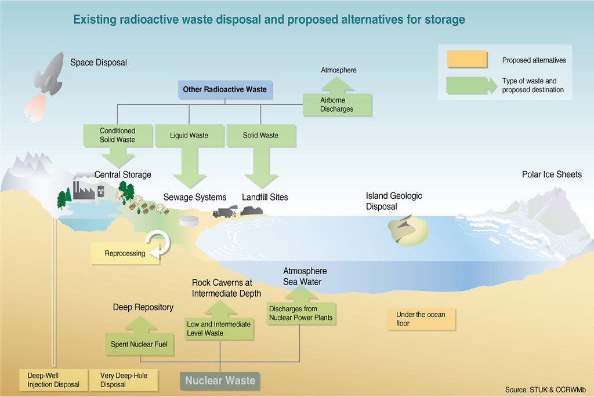

Diagnostic Imaging: Radioactive isotopes are widely used in medical imaging techniques such as positron emission tomography (PET) and single-photon emission computed tomography (SPECT) for diagnosing various conditions and diseases.
Cancer Treatment: Radioactive sources, like cobalt-60 and various isotopes of iodine, are used in radiation therapy to treat cancer by targeting and destroying cancerous cells.
Thickness Gauges: Radioactive sources are used in industrial settings for measuring the thickness of materials in manufacturing processes.
Radiography: X-ray machines, which utilize radioactivity, are commonly used for inspecting the integrity of welds in pipelines and structures.
Nuclear Power Generation: Radioactive materials, such as uranium-235 and plutonium-239, are used as fuel in nuclear power plants to produce electricity through controlled nuclear reactions.
Food Preservation: Irradiation with gamma rays from radioactive materials is used to kill bacteria and parasites in food, thereby extending the shelf life of certain perishable items.
Hazards of Radioactivity
Accidental releases of radioactive materials, such as those that occur in nuclear accidents, can have severe consequences. The Chernobyl and Fukushima disasters serve as examples, highlighting the importance of proper safety measures in handling radioactive substances. Improper disposal or leakage of radioactive waste can contaminate soil, water, and air, posing long-term environmental risks and potential harm to ecosystems. The severity of the hazards of radioactivity depends on three factors.
Radiation warning sign
Half-Life Considerations: The half-life of a radioactive material determines the rate at which it decays. Shorter half-lives mean more rapid decay and higher radioactivity in the short term. Long-lived isotopes can pose hazards over extended periods.
Ionizing Effects: The ionizing effects of radioactive emissions can damage living tissues and cells. This can lead to health issues, including an increased risk of cancer, if exposure is not controlled.
Penetrating Abilities: The penetrating abilities of radioactive emissions vary. Alpha particles are relatively heavy and can be stopped by a sheet of paper, while beta particles can penetrate skin but are stopped by thicker materials. Gamma rays, however, are highly penetrating and require dense materials (e.g., lead or concrete) to shield against them.
Type of radiation
Penetration in air
Ionization power
Alpha
a few cm
high
Beta
up to 1 m
low
Gamma
up to 1 km
very low
Ionization and penetrative abilities of radioactive particles
Check for Understanding
A factory continuously produces plastic sheets. A radioactive isotope and a detector are used to
check the thickness of the sheets.
What is the most suitable source to use?
an alpha source with a half-life of a few minutes
an alpha source with a half-life of several years
a beta source with a half-life of a few minutes
a beta source with a half-life of several years
D. Beta particles have the penetrative ability to pass through plastic sheets. The activity of the source has to be almost constant over a long period of time so that the readings on the detector are constant if the thickness of the plastic sheets are constant.
Safety Measures
The following are some safety measures put in place to manage the risks involved when working with radioactivity.
Shielding: Proper shielding using materials like lead, concrete, or water can effectively reduce exposure to radioactive emissions.
Dosimetry: Monitoring and measuring radiation doses through dosimetry are crucial in occupational settings to ensure that workers are not exposed to harmful levels of radiation.
Regulations and Standards: Strict regulations and adherence to safety standards are essential to minimize the risk of accidental exposure in various industries and medical practices.
Waste Management: Proper management and disposal of radioactive waste are crucial to prevent environmental contamination and long-term hazards.
Dosimeter measuring radiation in the Chernobyl Exclusion Zone Ways of radioactive waste disposal (Source: https://www.grida.no/resources/5657)
Balancing the benefits of radioactivity in medicine, industry, and energy production with the potential hazards requires careful regulation, oversight, and adherence to safety protocols. Advances in technology and safety measures continue to enhance the responsible use of radioactive materials in various applications.